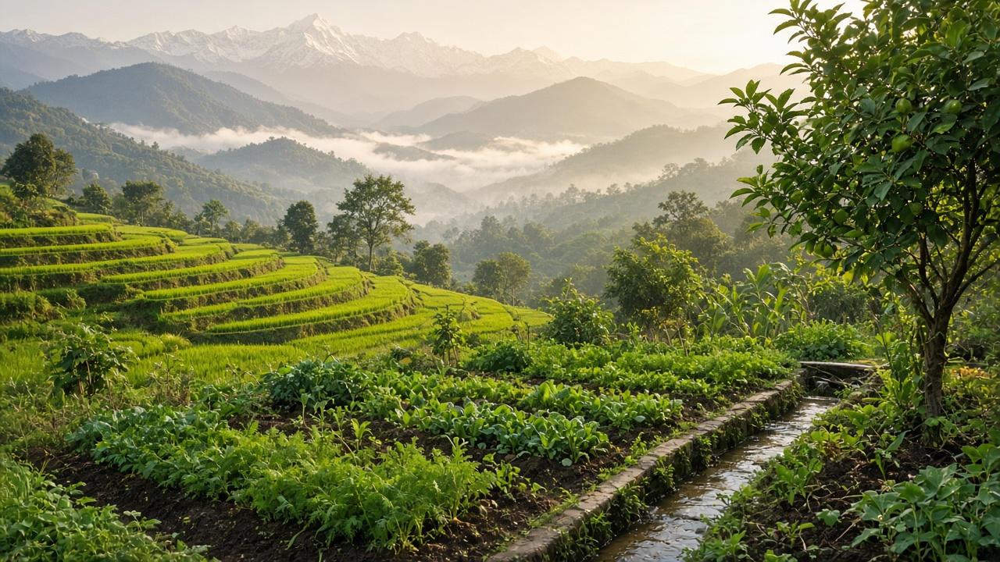

Sustainable Agriculture & Food Systems
दिगो कृषि र खाद्य प्रणाली

Possible subtopics to explore for sustainable farming, food security, and resilient food systems.
दिगो कृषि र खाद्य प्रणाली

Possible subtopics to explore for sustainable farming, food security, and resilient food systems.